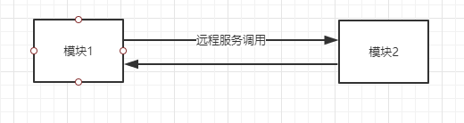
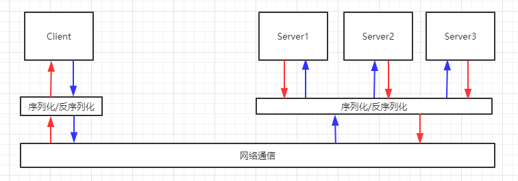
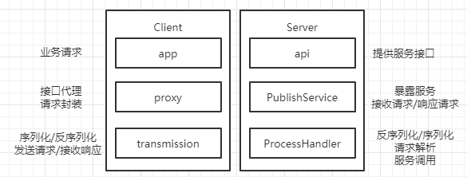
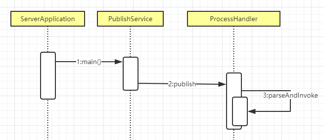
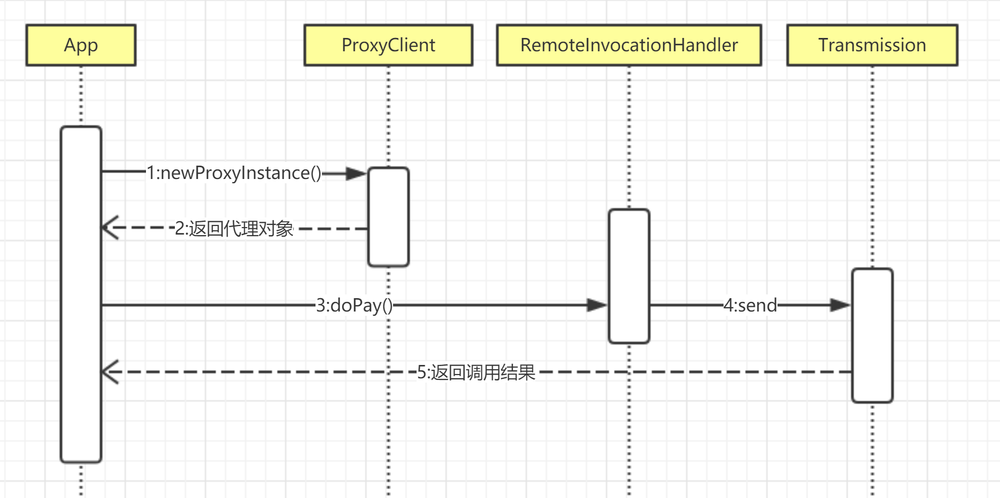
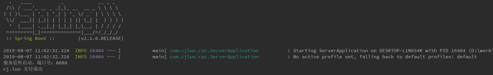

RPC，全称Remote Procedure Call，远程过程调用，即调用远程PC上的服务，就像调用本地服务一样。目前流行的RPC框架有阿里的dubbo、facebook的thrif、谷歌的grpc、新浪微博的motan等。本篇只分析RPC的基本原理，并不涉及复杂的设计，最后以一个简单的demo实现RPC框架。
RPC框架的存在背景
系统在演进的过程中，不断的拆分、模块化、服务化，逐渐成为分布式系统，各模块之间的通信通过服务调用完成。

分析以上场景，远程服务调用的细节，包括了请求数据序列化、网络通信、请求反序列化、响应序列化、网络通信、响应反序列化这一过程。

假如没有RPC框架，应用开发人员每次都要按照上述流程进行服务调用，不仅要关心业务，还要实现序列化/反序列化和网络通信，重复造轮子。衍生出的另一个问题是，随着服务的不断增多，复杂度不断提高，简单的远程服务调用已经无法满足实际业务需求。因此，伴随着系统的演进，RPC框架的出现也一步步解决了以上问题。
RPC框架的基本实现
最简单的RPC框架，由两个组件组成：Client和Server，分别表示服务提供方和服务消费方。模拟一个场景，以电商订单支付为例，用户下单进行支付，由订单模块发起服务调用，支付模块提供支付服务并返回最终的支付结果，为了解耦，需要设计几个模块分别负责各自的功能。

建立两个project，rpcServer和rpcClient
Server端
rpcServer包含api和provider模块，api定义对外暴露的服务和入参/出参对象
- 支付服务定义
1 | public interface IPayService { |
- 用户对象
1 | public class User implements Serializable { |
- 实现支付服务
1 | public class PayServiceImpl implements IPayService { |
服务定义和实现都有了，服务提供方接受请求时，需要找到对应的实例和方法，通过反射调用并返回结果，将请求类名、方法名和参数封装成
Request对象。
1 | /** |
为了让客户端调用，服务端必须将服务发布，通过
ServerSocket以BIO的方式接收客户端的请求，同时利用多线程提高请求处理的能力
1 | public class PublishService { |
每个请求由线程池调度，通过
ProcessHandler处理，ProcessHandler的职责是将接受到的请求反序列化，解析请求，调用对应的服务，将结果序列化后返回给客户端。
1 | public class ProcessHandler implements Runnable { |
Client端
客户端发起远程调用，客户端无法获得远程服务的实例，只能通过生成的代理对象调用，代理对象将请求封装成RPC请求对象，通过网络传输调用远程服务。
1 | public class ProxyClient { |
RemoteInvocationHandler负责接口代理的具体实现，它将调用信息封装成Request对象，通过网络传输组件发起PRC请求
1 | /** |
Transmission是负责网络通信的组件，在本Demo中，就是一个简单的socket客户端
1 | public class Transmission { |
server启动
1 | public class ServerApplication { |
client测试代码
1 | public class App { |
结果输出
1 | cj.luo 支付成功 |
Server调用过程的时序图如下：

Client调用过程的时序图如下：

从Server时序图看，服务都需要通过PublishService发布，Server的服务如果越来越多，这种方式不仅代码冗余，难以维护，扩展性也很差，那么如何改进？可以引入Spring对要发布的服务进行管理，通过注解的方式，将服务给Spring托管。
委托Spring管理服务发布
Spring可以将包路径下的所有标记为托管对象的Bean注册到Spring容器中，可以利用这个特性管理我们Server端的RPC服务。（demo通过Springboot-starter引入Spring依赖）
- 定义注解，用来标记哪些服务需要对外发布
1 | (ElementType.TYPE) |
- 标记要发布的服务
1 | (IPayService.class) |
Spring的InitializingBean接口为托管的Bean提供了初始化方法的方式，它有一个
afterPropertiesSet方法，凡是继承该接口的类，在初始化bean的时候会执行该方法。服务实例化后，不需要通过调用PublishService进行服务发布，而是把PublishService交给Spring管理，它在初始化完成之后，扫描带有RemoteService注解的服务，将这些服务封装成一个map，通过afterPropertiesSet发布出去。
- 将PublishService交给Spring容器管理
1 |
|
- 修改后的PublishService
1 | public class PublishService implements ApplicationContextAware, InitializingBean { |
- ProcessHandler中，通过解析请求，服务从serviceHandlerMap获取
1 | public class ProcessHandler implements Runnable { |
- 通过Springboot启动Server
1 |
|
未修改Client直接调用远程服务

BIO优化为NIO
前面以BIO的方式实现网络通信，在大量并发请求下容易出现性能瓶颈，改用NIO，通过Netty进行重构。
重构Server
- 修改PublishService类的
afterPropertiesSet()方法
1 | public void afterPropertiesSet() throws Exception { |
- ProcessHandler调整，继承ChannelInboundHandlerAdapter，重写channelRead
1 | public class ProcessHandler extends ChannelInboundHandlerAdapter { |
重构Client
Client只需要将网络传输的逻辑重构
1 | public class NettyTransmission { |
- ConsumerHandler用来读取Server返回的响应消息
1 | public class ConsumerHandler extends ChannelInboundHandlerAdapter { |
- 动态代理类最后改为Netty调用
1 | public class RemoteInvocationHandler implements InvocationHandler { |
总结
基本的RPC框架远远不止以上代码，client如何获取server的地址、端口，如何进一步解耦。服务上线、下线如何通知client等等……这些可以通过引入注册中心来优化，这里就不一一实现，更多的是简述RPC的设计思想和原理。
- 代码参考